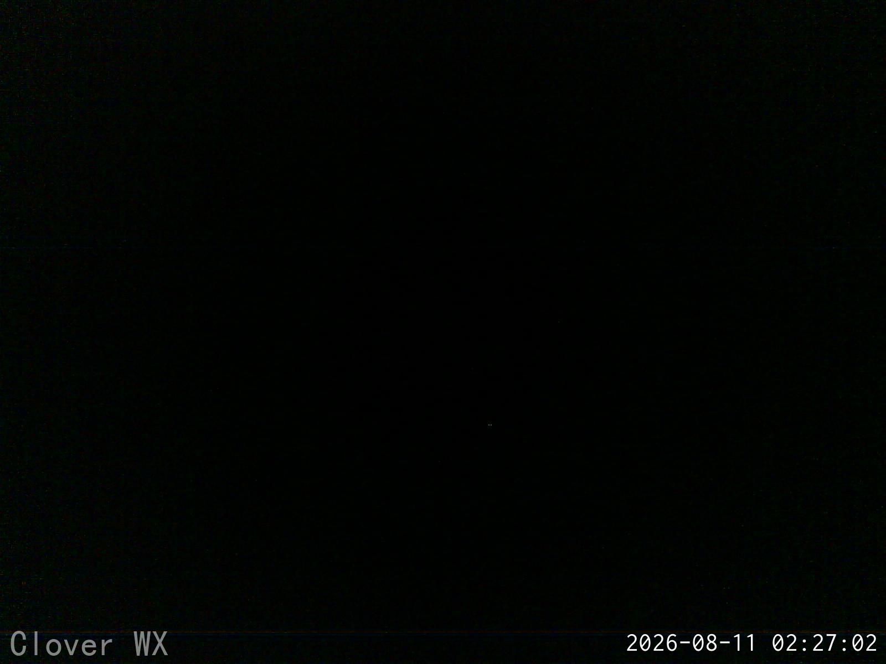

🍀
Clover Terrace Weather Station
Loading...
Station Camera

Temperature & Humidity — Last 7 Days
Wind Speed & Gusts — Last 7 Days
Wind Direction — Last 7 Days
Barometric Pressure — Last 7 Days
🔄 Refresh Now
🌪️ Visitors:
…